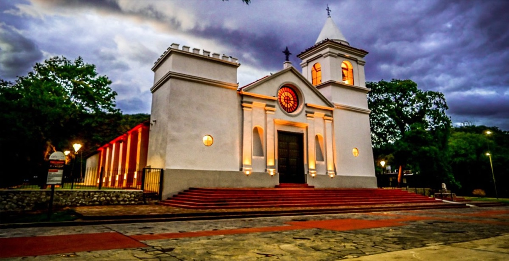

Obras y espacios públicos
Mejoras para disfrutar los puntos históricos del departamento

La Municipalidad de Fray Mamerto Esquiú avanza con tareas de mantenimiento, señalización y mejoras urbanas en puntos históricos del departamento para fortalecer el uso comunitario y turístico de estos espacios.
Las intervenciones incluyen limpieza integral, reacondicionamiento de sectores peatonales, revisión de luminarias y renovación de cartelería informativa. El objetivo es facilitar recorridos más seguros, accesibles y ordenados para vecinos, instituciones educativas y visitantes.
Desde el área de Obras y Servicios Públicos se trabaja de manera coordinada con equipos municipales para sostener el cuidado de los espacios patrimoniales durante todo el año.
Próximas tareas
Durante las próximas semanas se completará la revisión de sectores verdes, se reforzará la señalización preventiva y se incorporarán nuevas acciones de mantenimiento en circuitos de alto tránsito.